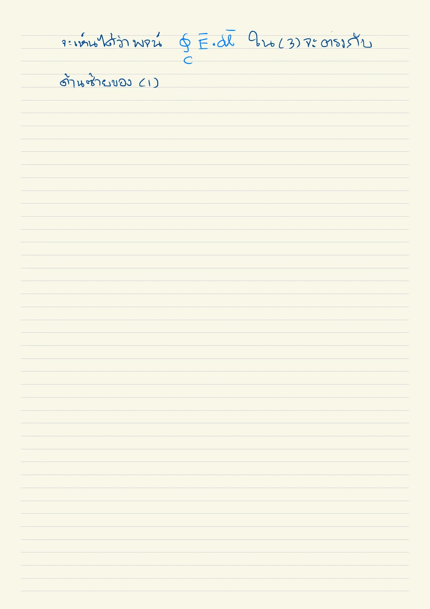
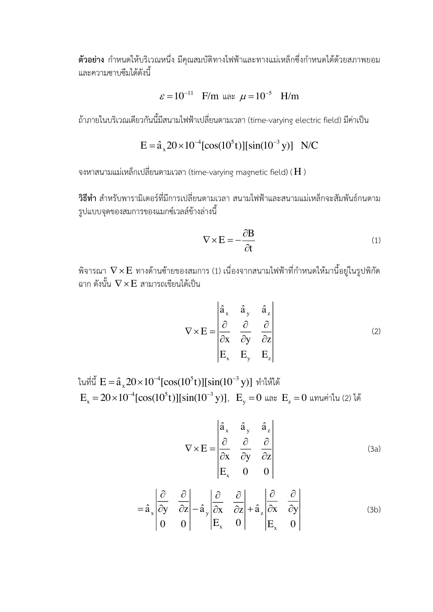
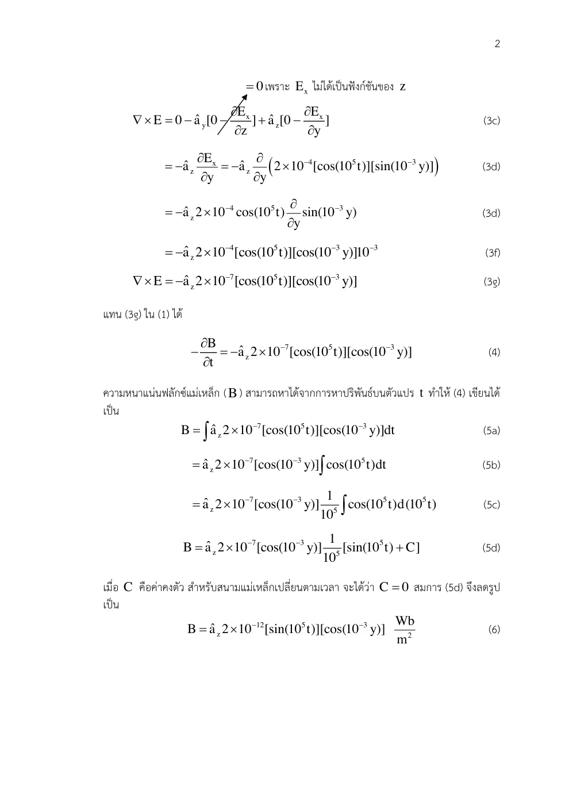
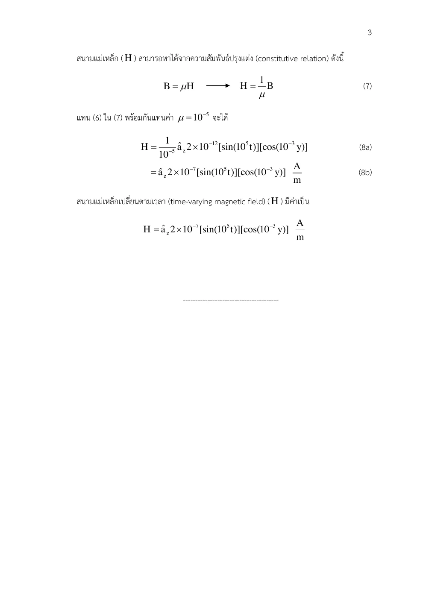

01 ฟาราเดย์ทั่วไปสำหรับวงอยู่นิ่ง
ℰ=∮CE • dl=−ddt∫SB • ds
เหตุใดจึงแปลงรูปเช่นนี้? เลือกปกติผิวกับวงตามมือขวา วงและผิวคงที่จึงย้ายอนุพันธ์ผ่านปริพันธ์ผิวได้
Faraday & Lenz · Hayt §9.1; Sadiku §9.2
เหตุใดสนามแม่เหล็กที่เปลี่ยนจึงสร้างแรงดันได้ แม้ไม่มีประจุที่เป็นแหล่งคูลอมบ์?
ฟลักซ์แม่เหล็กที่เปลี่ยนทำให้สนามไฟฟ้าวนได้ จึงมีงานต่อประจุรอบวงแม้กลับมาจุดเดิม แรงดันเหนี่ยวนำไม่ใช่ความต่างของศักย์สเกลาร์เพียงสองจุดในทุกสถานการณ์ ต้องระบุวงและขอบเขตฟลักซ์
เครื่องหมายลบของเลนซ์บอกว่าการตอบสนองต้านการเปลี่ยนฟลักซ์ต้นเหตุ ไม่ใช่ต้าน B เสมอ ถ้า B กำลังลด กระแสเหนี่ยวนำจะช่วยรักษา B ทิศเดิม ถ้าสมมติให้มันเสริมการเพิ่ม จะขยายฟลักซ์และกระแสเองโดยไม่รับงานเพิ่ม ขัดกับบัญชีพลังงานของระบบพาสซีฟ
วงที่อยู่นิ่งรับสนามแปรเวลา กับวงที่เคลื่อนผ่านสนามคงที่เป็นคนละกลไก ส่วนแรกมาจาก curl E ส่วนหลังมาจากแรง qv×B ต้องเลือกสูตรให้ตรงสถานการณ์
ขอบเขตแบบจำลอง: วงอยู่นิ่งในขั้น 1–9; μ คงที่และเลือกส่วนสนามสถิตศูนย์ในตัวอย่างตามสไลด์
เหตุใดจึงแปลงรูปเช่นนี้? เลือกปกติผิวกับวงตามมือขวา วงและผิวคงที่จึงย้ายอนุพันธ์ผ่านปริพันธ์ผิวได้
เหตุใดจึงแปลงรูปเช่นนี้? อนุพันธ์ย่อยถือจุดสังเกตคงที่ ใช้ทุกผิวที่อยู่นิ่ง
เหตุใดจึงแปลงรูปเช่นนี้? รูปสุดท้ายใช้ μ คงที่ตามเวลา ถ้าวัสดุเปลี่ยนต้องคงอนุพันธ์ B เต็มไว้
เหตุใดจึงแปลงรูปเช่นนี้? แต่ละรอบรับฟลักซ์เดียวกันและ N คงที่ สัญลักษณ์นี้เป็นฟลักซ์เชื่อมโยงไม่ใช่ความยาวคลื่น
เหตุใดจึงแปลงรูปเช่นนี้? ลบของฟาราเดย์กับลบจากอนุพันธ์ cos ตัดกัน ใช้กฎลูกโซ่จึงต้องมี ω
เหตุใดจึงแปลงรูปเช่นนี้? แปลง mWb เป็น Wb ก่อนแทน ผลเป็น peak ไม่ใช่ RMS
เหตุใดจึงแปลงรูปเช่นนี้? สนามมีแต่ x และขึ้นกับ y เครื่องหมายองค์ประกอบ z มาจาก −∂Ex/∂y
เหตุใดจึงแปลงรูปเช่นนี้? อินทิเกรต cosωt ให้ sinωt/ω และเก็บส่วนสถิตไว้ คำตอบตัวอย่างเลือกส่วนสถิตศูนย์
เหตุใดจึงแปลงรูปเช่นนี้? สไลด์ใช้ A=2×10⁻⁴ จึงได้ H เล็กกว่าสิบเท่า ต้องแยกฉบับให้ชัด
เหตุใดจึงแปลงรูปเช่นนี้? รวมแรงต่อประจุจากสนามไฟฟ้าและการเคลื่อนของตัวนำ สูตรฟาราเดย์ของวงอยู่นิ่งไม่ครอบคลุมส่วน motional โดยลำพัง
เขียนสูตรทั่วไป → ระบุพิกัดและทิศ → วิเคราะห์ด้วยมือ → ใช้ขอบเขต → ตรวจหน่วย SI และความหมาย
หม้อแปลงมีขดลวดอยู่นิ่งแต่ฟลักซ์แปรเวลา แรงดันแต่ละขดสัมพันธ์กับ N และ dΦ/dt จึงอธิบายอัตราส่วนแรงดันได้เมื่อฟลักซ์เชื่อมโยงร่วม
เครื่องกำเนิดสามารถเปลี่ยนฟลักซ์เชื่อมโยงโดยการหมุนวงในสนาม และมอเตอร์มีแรงดันย้อนกลับจากการเคลื่อน การอนุรักษ์พลังงานบอกว่าพลังงานไฟฟ้าที่ได้ต้องมาจากงานกลหรือแหล่งสนาม
ลองอธิบายด้วยคำของตนเอง: เมื่อฟลักซ์ cosωt อยู่ที่ค่าสูงสุด แรงดันเหนี่ยวนำเป็นศูนย์เพราะเหตุใด?
เลื่อนเฟสเวลาในกราฟ Φ และ e ตรวจว่าแรงดันเป็นศูนย์เมื่อฟลักซ์มีค่าสูงสุด และสูงสุดเมื่อความชันฟลักซ์มากที่สุด
ก่อนปรับ: ทำนายทิศและขนาด · หลังปรับ: อธิบายด้วยสมการและเงื่อนไข
แนวคิดของบทนี้เป็นฐานให้ Set 21, Set 22
เลขหน้าทั้งหมดนับหน้า PDF รวมปก ตำราเป็นแหล่งตรวจวิธีและนิยาม ไม่ได้กล่าวว่าข้อมูลทุกตัวอย่างตรงกับข้อสอบ บทอธิบายและการพิสูจน์ด้านบนเรียบเรียงเพื่อการสอน
การเปลี่ยนฟลักซ์แม่เหล็กสร้างสนามไฟฟ้าที่มีการวน กฎเลนซ์ให้เครื่องหมายลบซึ่งบอกการต้านการเปลี่ยนฟลักซ์ ทิศวงปิดและปกติของผิวต้องสัมพันธ์ตามมือขวา
อ่าน สไลด์หลัก · หน้า PDF 1 ควบคู่กับคำอธิบายด้านล่าง เพื่อเทียบรูปและลำดับสมการ
สูตร emf = ∮E•dl ในบทนี้ใช้วงและผิวอยู่นิ่ง ถ้าวงเคลื่อนที่ต้องรวม v×B สนามไฟฟ้าแปรตามเวลาทั่วไปเขียนเป็น −∇V อย่างเดียวไม่ได้ เงื่อนไขอินทิเกรตตามเวลาอาจเหลือสนามคงตัว
emf เป็นงานต่อหนึ่งหน่วยประจุรอบวง มีหน่วย V เมื่อ B เพิ่มในทิศปกติบวก เลนซ์บอกว่าสนามจากกระแสเหนี่ยวนำต้านการเพิ่มนั้น วงและผิวต้องอยู่นิ่งสำหรับสูตรในบทนี้
อินทิเกรตตามเวลาจะได้ส่วนสนามที่เปลี่ยนตามเวลาและสนามคงตัวที่เหลือ เงื่อนไขเริ่มต้นใช้กำหนดส่วนสนามคงตัว
| สัญลักษณ์ | ความหมาย / คำอ่าน | SI |
|---|---|---|
| emf | แรงเคลื่อนไฟฟ้า | V |
| Φ | ฟลักซ์แม่เหล็ก | Wb |
| t | เวลา | s |
| B | ความหนาแน่นฟลักซ์แม่เหล็ก | T |
แสดง 13 หน้า
แต่ละรายการเรียบเรียงภาษาไทย พร้อมภาพต้นฉบับหน้าเดียวกัน ภาพคงรูปเวกเตอร์และลำดับการพิสูจน์ของอาจารย์ เปิดเฉพาะหน้าที่ต้องการอ่าน
| สัญลักษณ์ | คำอ่านและความหมาย | SI |
|---|---|---|
| x,y,z; r,ρ; θ,ϕ | เอ็กซ์ วาย แซด; อาร์ โร; ทีตา ไฟ · พิกัดและมุม | m; m; rad |
| E, D; H, B | อี ดี; เอช บี · สนามและฟลักซ์ไฟฟ้า/แม่เหล็ก | V/m, C/m²; A/m, T |
| J, K; ρv, ρs | เจ เค; โรซับวี โรซับเอส · กระแสปริมาตร/ผิวและประจุปริมาตร/ผิว | A/m², A/m; C/m³, C/m² |
| ε, μ, σ; εr, μr | เอปไซลอน มิว ซิกมา · สภาพยอม ความซาบซึมได้ สภาพนำ; ค่าสัมพัทธ์ | F/m, H/m, S/m; ไม่มีหน่วย |
| P, χe | พี ไคซับอี · โพลาไรเซชันและความไวทางไฟฟ้า | C/m², ไม่มีหน่วย |
| I, Q, q; V, V0 | ไอ คิว คิว; วี วีซับศูนย์ · กระแส ประจุรวม/ย่อย ศักย์/แรงดันกำหนด | A, C, C; V, V |
| C, W; S, A; d,L | ซี ดับเบิลยู; เอส เอ; ดี แอล · ความจุ พลังงาน พื้นที่ ระยะห่าง ความยาว | F, J; m², m²; m,m |
| A, Φ | เอ ไฟตัวใหญ่ · ศักย์เวกเตอร์แม่เหล็กและฟลักซ์ | Wb/m, Wb |
| ω, f, λ; k, η | โอเมกา เอฟ แลมบ์ดา; เค อีตา · ความถี่เชิงมุม ความถี่ ความยาวคลื่น เลขคลื่น อิมพีแดนซ์ | rad/s, Hz, m; rad/m, Ω |
| v, t; dl, ds, dv | วี ที; ดีแอล ดีเอส ดีวี · ความเร็ว เวลา ส่วนย่อยความยาว ผิว ปริมาตร | m/s, s; m,m²,m³ |
| an, j; ∇, ∇2 | เอซับเอ็น เจ; เดล ลาปลาเซียน · เวกเตอร์หน่วย หน่วยจินตภาพ ตัวดำเนินการพื้นที่ | ไม่มีหน่วย; ต่อระยะทางและระยะทาง² |
| Es, Hs | อีซับเอส เอชซับเอส · เฟสเซอร์เชิงอวกาศ | V/m, A/m |
องค์ประกอบสนามมีหน่วยเดียวกับสนาม ตัวห้อย t,n คือสัมผัสและปกติ ตัวห้อย 1,2 คือตัวกลาง ไพรม์ระบุแหล่งกำเนิด a ที่เป็นค่าคงตัวจากการอินทิเกรตมีหน่วยตามสมการที่ใช้; a ที่เป็นเวกเตอร์หน่วยไม่มีหน่วย
ε=10−11 F/m, μ=10−5 H/m; E=20×10−4cos(105t)sin(10−3y)ax V/m หา H โดยให้ส่วนสถิตเป็นศูนย์ตามวิธีเฉลยต้นฉบับ
ALL-Q08 · E สัมประสิทธิ์ 20 · เรียบเรียงจากไฟล์จริง · ALL-Q08 · สัมประสิทธิ์ 20 · หน้า PDF 23 · Set 20 · ฉบับสัมประสิทธิ์ 2 · หน้า PDF 1 · Hayt D9.1 · สนาม B คนละโจทย์ · หน้า PDF 297
| ax | ay | az |
| ∂∂x | ∂∂y | ∂∂z |
| Ex | Ey | Ez |
ทำไมจึงทำขั้นนี้? ตัวกลาง μ คงที่ จึงแทน B=μH ได้ ต้องเขียนดีเทอร์มิแนนต์ก่อนใส่ฟังก์ชัน
ทำไมจึงทำขั้นนี้? สนามมีแต่ x และขึ้นกับ y เครื่องหมายองค์ประกอบ z มาจาก −∂Ex/∂y
ทำไมจึงทำขั้นนี้? อินทิเกรต cosωt ให้ sinωt/ω และเก็บส่วนสถิตไว้ คำตอบตัวอย่างเลือกส่วนสถิตศูนย์
ทำไมจึงทำขั้นนี้? สไลด์ใช้ A=2×10⁻⁴ จึงได้ H เล็กกว่าสิบเท่า ต้องแยกฉบับให้ชัด
ทำไมจึงทำขั้นนี้? อนุพันธ์ sin(10⁻³y) ให้ 10⁻³cos และพจน์เคิร์ล z มีลบ
ทำไมจึงทำขั้นนี้? อินทิเกรต cosωt เป็น sinωt/ω ค่าคงตัวเป็นสนามที่ไม่เปลี่ยนเวลา จึงต้องระบุเงื่อนไขเพื่อเลือกมัน
ทำไมจึงทำขั้นนี้? กำหนด h0=0 ตามเฉลย ตัวเลขใหญ่กว่าฉบับสไลด์ 10 เท่าเพราะ E ต้นฉบับเป็น 20 มิใช่ 2; ε ไม่จำเป็นสำหรับการหา H จากฟาราเดย์เพียงสมการเดียว
ให้ E = 2 × 10−4 cos(105t) sin(10−3y) ax V/m, μ = 10−5 H/m จงหาส่วนของ H ที่เกิดจากฟาราเดย์ กำหนดส่วนสนามที่ไม่แปรตามเวลาเป็นศูนย์
ตัวอย่างสไลด์ Set 20 · สัมประสิทธิ์ 2 ต่างจาก ALL-Q08 ที่เป็น 20 · Set 20 เฉลย · หน้า PDF 1 · Hayt D9.1 โครงสร้างคล้ายกันแต่เริ่มจาก B · หน้า PDF 297
| ax | ay | az |
| ∂∂x | ∂∂y | ∂∂z |
| Ex | Ey | Ez |
ทำไมจึงทำขั้นนี้? ฟาราเดย์เชื่อมเคิร์ล E กับอนุพันธ์เวลา B
ทำไมจึงทำขั้นนี้? สนามมีเฉพาะองค์ประกอบ x แต่เปลี่ยนตาม y จึงได้เคิร์ลแนว z
เงื่อนไขที่กำหนดทำให้สนามคงตัวเป็นศูนย์ การใช้ฟาราเดย์เพียงสมการเดียวไม่ได้รับรองว่าคู่สนามเป็นคลื่นไร้แหล่ง ต้องตรวจสมการที่เหลือหากโจทย์ต้องการ
ทำไมจึงทำขั้นนี้? หาร μ แล้วอินทิเกรตเวลา ต้องหาร ω ที่มาจาก chain rule
ทำไมจึงทำขั้นนี้? ค่าคงตัวเชิงอวกาศคือส่วนสนามสถิต ต้องประกาศว่าเลือกศูนย์
ให้ ε = 10−11 F/m, μ = 10−5 H/m, J = 0 และ Bx = 2×10−4 cos(105t) sin(10−3y) T จงหา E จากแอมแปร์–แมกซ์เวลล์ โดยให้ส่วนสนามสถิตเป็นศูนย์ และหา Φ ผ่านผิว x=0, 0≤y≤40, 0≤z≤2 โดยปกติ +ax
Drill ตำรา: คงค่าตามต้นฉบับ · Hayt D9.1 · หน้า PDF 297 · Set 20 · สูตรพื้นฐานที่เกี่ยวข้อง · หน้า PDF 11
| ax | ay | az |
| ∂∂x | ∂∂y | ∂∂z |
| Hx | Hy | Hz |
ทำไมจึงทำขั้นนี้? โจทย์ให้ B จึงต้องใช้ B=μH ก่อนหาเคิร์ลและเชื่อมกับ E
ทำไมจึงทำขั้นนี้? เคิร์ล H เลือกอนุพันธ์ตาม y จากนั้นอินทิเกรตเวลาและกำหนดส่วนสถิต
ทำไมจึงทำขั้นนี้? ฟลักซ์เป็นปริพันธ์ผิวของ B ให้ขอบ z และ y ถูกต้อง
ฟลักซ์มีแอมพลิจูดประมาณ 3.19957×10−4 Wb สูตร E ที่ได้มีเฉพาะแนว z และต้องใส่เวกเตอร์ az; สอดคล้องกับฟาราเดย์เพราะความถี่และค่าคงตัวตำแหน่งตรงกับ ω√(με)
ทำไมจึงทำขั้นนี้? ตรวจมิติ Wb และความสัมพันธ์เลขคลื่นกับ ω√με
เลื่อนพารามิเตอร์เพื่อดูแนวโน้มและเครื่องหมาย แล้วกลับไปพิสูจน์ด้วยสูตรตั้งต้นในตัวอย่าง
ตัวอย่างเพิ่มเติม โน้ต และภาพลายมือแสดงเป็นหน้าต้นฉบับเรียงลำดับ ใช้คำอธิบายและวิธีทำในบทนี้ประกอบ
เหลือการวนตามขอบนอกเท่าผลรวมเคิร์ลบนผิว ชื่อมาตรฐานคือ Stokes

เขียนฟาราเดย์และดีเทอร์มิแนนต์ก่อนแทน E

หา −∂Ex/∂y ตามแกน z แล้วอินทิเกรต B ตามเวลา

หาร B ด้วย μ เป็น H; ส่วนสนามคงตัวต้องใช้เงื่อนไขเพิ่มเติม
